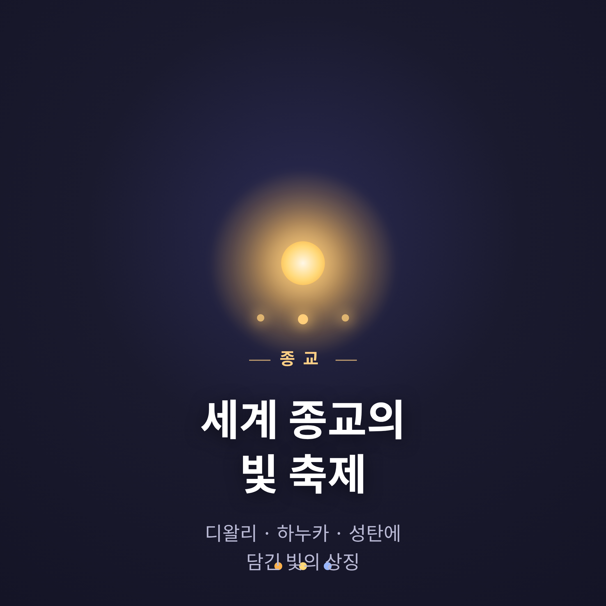
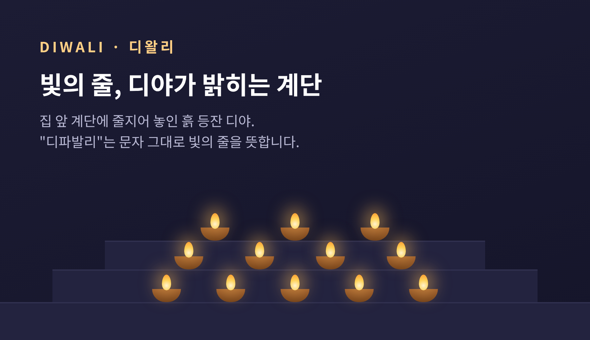
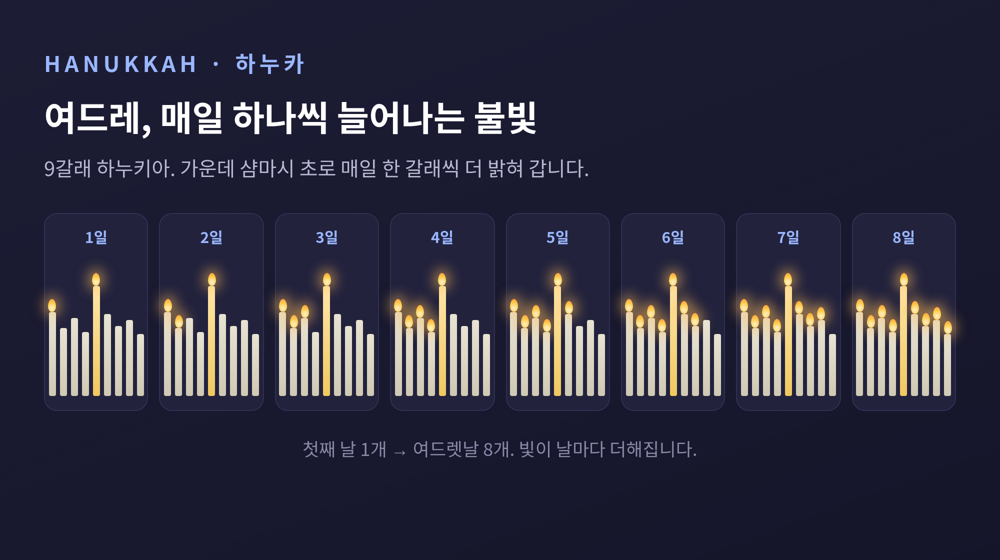
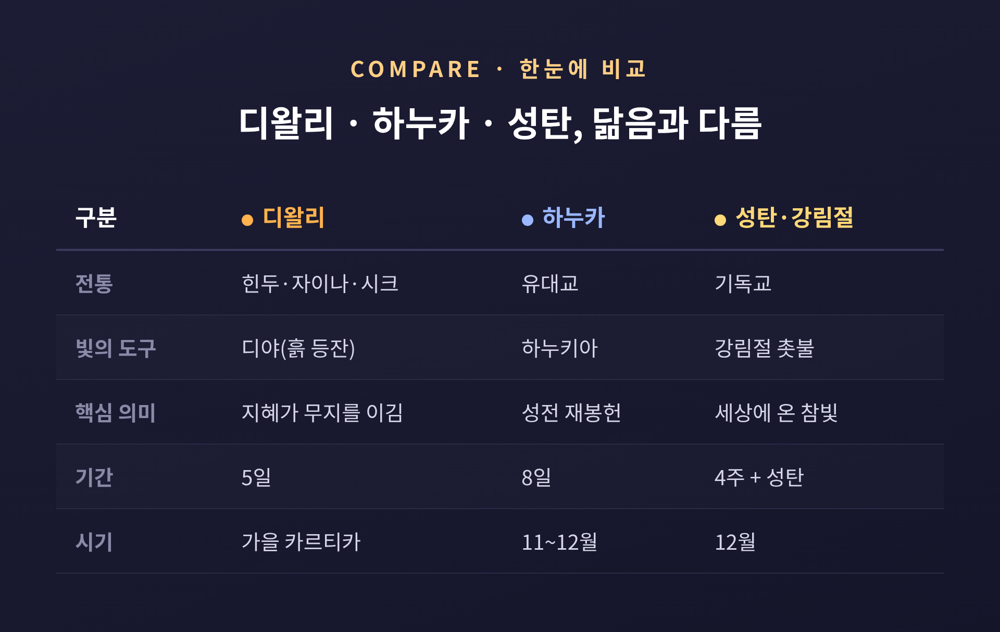

[종교] 세계 종교의 빛 축제
— 디왈리·하누카·성탄에 담긴 빛의 상징
이번 글에서는 세계 종교의 빛 축제를 정리해 보겠습니다. 디왈리, 하누카, 성탄은 서로 다른 전통에서 자랐지만, 모두 등불과 촛불로 어둠을 밝힙니다. 각 축제를 그 전통 안의 시선에서 공정하게 살피고, 닮은 점과 다른 점을 함께 들여다봅니다.

- 디왈리·하누카·성탄은 표면적으로 "빛이 어둠을 이긴다"는 주제를 공유합니다.
- 그러나 유래·신학·달력·역사적 맥락은 서로 전혀 다릅니다.
- 닮음을 강조하되 한 종교로 환원하지 않는 균형이 핵심입니다.
■ 디왈리 — 한 축제, 여러 전통이 함께 켜는 등불
디왈리(Diwali)는 산스크리트어 디파발리(dīpāvali)에서 왔습니다. 디파(등불·빛·지혜)와 아발리(줄·열)가 합쳐져, 문자 그대로 "빛의 줄"을 뜻합니다.
전통적으로 디왈리는 빛이 어둠을, 선이 악을, 지혜가 무지를 이기는 영적 승리를 상징합니다.
흥미로운 점은 하나의 축제를 여러 종교 전통이 각자의 서사로 기념한다는 데 있습니다.
- 힌두교: 흙 등잔 디야를 켜 부와 번영의 여신 락슈미를 맞이합니다. 북인도에서는 라마가 라바나를 물리치고 아요디아로 귀환한 일을, 남인도에서는 크리슈나가 악마 나라카수라를 물리친 일을 기립니다.
- 자이나교: 마지막 티르탕카라인 마하비라의 깨달음과 해탈을 기립니다.
- 시크교: 구루 하르고빈드가 유폐에서 풀려나 돌아온 날을 반디 초르 디바스, 곧 해방의 날로 기념합니다.
그러니 "디왈리는 라마 이야기"라고 한 줄로 단정하기는 어렵습니다. 지역마다, 전통마다 의미가 다른 까닭입니다. 5일에 걸쳐 이어지는 인도 최대의 명절이기도 합니다.

■ 하누카 — 봉헌의 기억과 여드레의 불빛
히브리어 하누카는 "봉헌"을 뜻합니다. 예루살렘 제2성전의 재봉헌을 기념하기 때문입니다. "빛의 축제"라고도 널리 불립니다.
배경에는 항쟁의 역사가 있습니다. 셀레우코스 왕 안티오코스 4세의 군대에 맞선 마카비 봉기가 승리한 뒤, 기원전 164년 키슬레브월 25일에 성전을 다시 봉헌했습니다. 축제는 그 전야에 시작해 여드레 동안 이어집니다.
그런데 왜 하필 여드레일까요. 여기에는 두 가지 설명이 함께 전해집니다.
- 탈무드의 기적 서사: 메노라를 밝힐 정결한 기름이 하루치뿐이었으나, 기적적으로 여드레 동안 탔다는 이야기입니다.
- 역사·문헌적 설명: 『마카베오기 하권』은 유다 마카베오가 여드레를 기념하라 지시했다고 전하며, 학자들은 이것이 초막절과 그 여덟째 날을 늦게 지낸 것일 수 있다고 봅니다.
한쪽만 옳다고 단정하기보다, 두 결을 함께 기억하는 편이 정직합니다.
여드레 동안 매일 촛불을 하나씩 더 켜 나가는 아홉 갈래 메노라, 곧 하누키아로 기념합니다. 다만 하누카는 유대 절기 가운데 위상이 비교적 작은 절기라는 점도 덧붙여 둡니다.

■ 성탄·강림절 — "세상의 빛"과 네 개의 촛불
기독교에서 빛 상징의 핵심은 요한복음입니다. 요한복음 8장 12절에서 예수는 자신을 "세상의 빛"이라 칭합니다. 1장에서는 "빛이 어둠에 비치되 어둠이 이기지 못하였더라"라고 전합니다. 곧 그리스도의 탄생을 어둠 속에 비친 참빛의 도래로 이해합니다.
강림절 화환은 성탄을 앞둔 네 번의 주일을 상징하는 네 개의 촛불로 이루어집니다. 각각 소망·평화·기쁨·사랑의 주제를 담습니다. 화환 중앙의 그리스도 초는 성탄절에 켜며, 세상에 오신 빛을 가리킵니다. 독일에서 시작된 전통으로 전해집니다.
12월 25일이라는 날짜의 유래에는 학계의 이견이 있습니다. 두 갈래 학설을 함께 적어 둡니다.
- 종교사적 설명: 로마 태양 종교, 특히 솔 인빅투스의 동지 무렵 축일에 대한 기독교의 재해석으로 이 날짜를 택했다는 견해입니다.
- 계산 설명: 태양 숭배와 무관하게 수태일 계산 등 다른 방식으로 날짜를 도출했다는 견해입니다.
학자 히즈만스는 동지의 우주적인 빛의 상징과 특정 태양신 숭배를 혼동해서는 안 된다고 지적합니다. 따라서 "성탄절은 곧 이교 태양 축제의 차용"이라는 단정은 신중해야 한다는 것입니다.
■ 한눈에 비교 — 닮음과 다름을 함께
세 축제는 빛이라는 한 단어로 묶이지만, 그 안을 들여다보면 결이 다릅니다.
| 구분 | 디왈리 | 하누카 | 성탄·강림절 |
|---|---|---|---|
| 전통 | 힌두·자이나·시크교 | 유대교 | 기독교 |
| 빛의 도구 | 디야(흙 등잔) | 하누키아(메노라) | 강림절 촛불·그리스도 초 |
| 핵심 의미 | 지혜가 무지를 이김 | 성전 재봉헌의 기억 | 세상에 온 참빛 |
| 기간 | 5일 | 8일 | 강림절 4주 + 성탄 |
| 시기 | 가을(카르티카 달) | 키슬레브월 25일(11~12월) | 12월(연대 논쟁 있음) |
표로 보면 분명해집니다. 같은 "빛"이라도 유래도, 달력도, 신학도 서로 다릅니다.

■ 그 밖의 빛, 그리고 왜 빛인가
빛을 품은 전통은 이 셋만이 아닙니다.
불교의 베삭은 붓다의 탄생·깨달음·열반을 보름달 날에 기리며, 거리와 집 앞에 등을 내겁니다. 한국의 연등 행사도 같은 빛의 결에 속합니다. 조로아스터교는 꺼지지 않는 성화로 빛과 어둠의 우주적 투쟁을 나타냅니다. 다만 이 전통은 스스로를 "불 숭배"라 부르는 표현을 오해라고 봅니다. 불 자체가 아니라, 순수한 빛이신 분의 상징으로 보기 때문입니다.
그렇다면 왜 이토록 많은 전통이 빛을 택했을까요.
어둠이 물러가고 빛이 돌아오는 경험은, 그 자체로 희망과 재생의 강력한 은유입니다. 쇠퇴가 끝이 아니라는 안심을 줍니다. 빛은 거의 모든 전통에서 지혜가 무지를 이기는 일, 정화와 변화, 신적 임재의 은유로 쓰입니다.
다만 일반화는 조심해야 합니다. 상당수 빛 축제가 어두워지는 계절에 몰려 있지만, 디왈리나 베삭처럼 동지와 직접 연결되지 않는 경우도 있는 까닭입니다.
끝으로 한 마디만 더 드리겠습니다.
여러 전통이 같은 등불을 켜더라도, 그 불빛이 비추는 이야기는 저마다 다릅니다. 닮음에 감동하되, 그 다름을 지워서는 안 될 것입니다.
"빛은 하나의 언어이되, 그 문법은 전통마다 다릅니다."
서로 다른 불빛이 나란히 타오르는 풍경을 떠올려 봅니다. 그 각각의 결을 있는 그대로 바라보는 일이야말로, 빛 축제가 우리에게 건네는 가장 조용한 가르침이 아닐까 생각합니다.